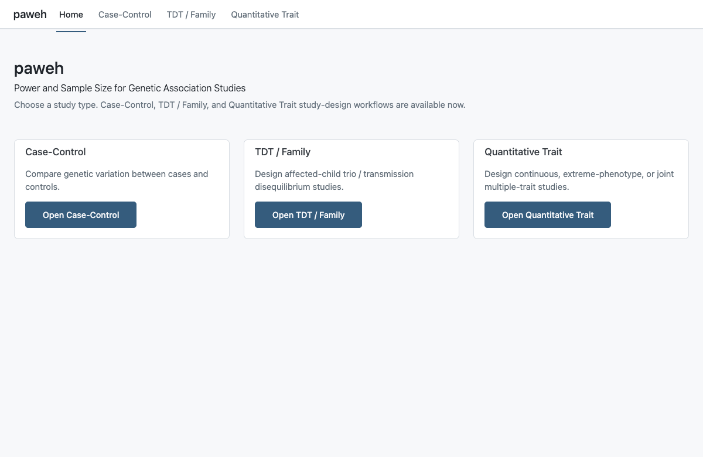
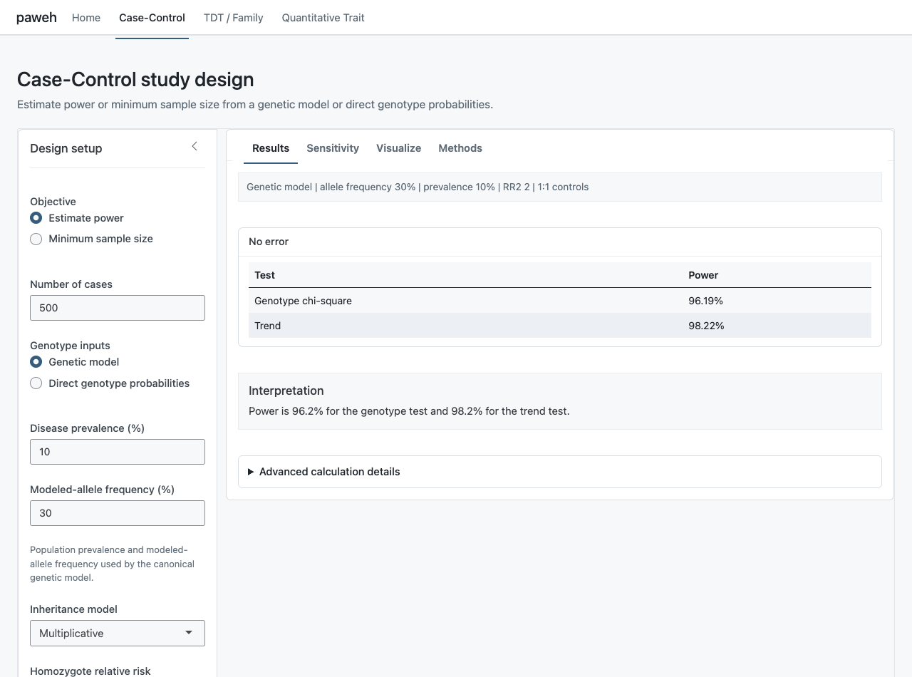
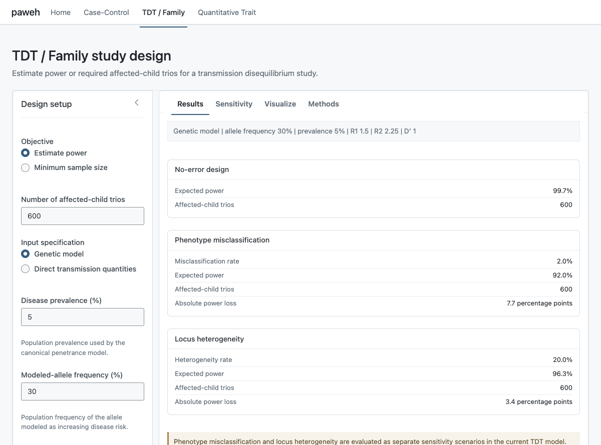
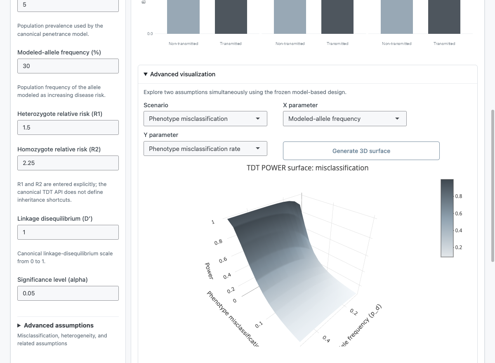
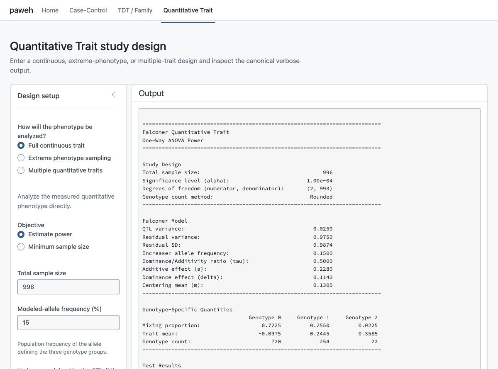
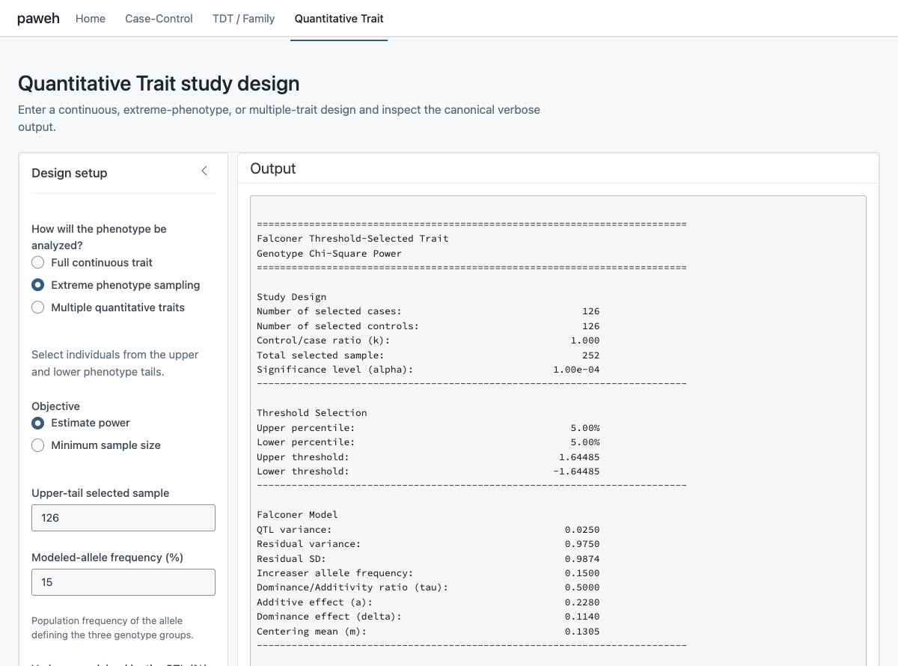

5. Interactive Study Design with the paweh Dashboard
paweh package authors
Source:vignettes/paweh-05-interactive-dashboard.Rmd
paweh-05-interactive-dashboard.RmdChoose the study you can recruit
A clinic can recruit 500 patients and 500 unaffected controls. Is that enough to detect a difference in their genotypes? A family registry has a different question: how many affected children and their parents are needed? A growth study may instead have one height measurement per person. The first decision in the dashboard is which of these studies you are planning.
The dashboard lets you enter a design, read the answer and try
another assumption without writing R code. It calls the same public
paweh functions you would use in a script. All three
workspaces are prospective: you supply a difference
worth detecting and assumptions about the people you expect to recruit.
Power is the chance that a repeated study would detect
that difference if those assumptions hold. Minimum sample
size works backwards from a target power to the recruitment
needed. Neither calculation tells you whether an association exists in a
dataset.
Install, open and stop the app
To follow this guide with the version on the personal GitHub
repository’s develop branch, run the first block once.
Suggested packages include plotly for the optional
family-study surface. Building the offline vignettes also needs Pandoc,
which is included with RStudio.
# If needed: install.packages("remotes")
remotes::install_github("akilanthony/paweh", ref = "develop",
dependencies = TRUE, build_vignettes = TRUE)Run the next block in an interactive R session.
paweh_app() constructs an application object;
shiny::runApp(app) starts it. Use the URL printed in the R
console if the viewer does not open. Stop the app to return to the R
prompt (the stop button in RStudio, or Ctrl+C in a terminal). Reading or
building this vignette does not start a server.

Start with how participants will be sampled and measured. The same three workspaces are available in the top navigation.
Choose Open Case-Control for unrelated cases and controls, Open TDT / Family for transmissions within families, or Open Quantitative Trait for measured traits such as height. Sequencing designs and LRTae validation designs are available in R; neither has a dedicated dashboard workspace.
How to read any workspace
- Choose the study family. Under Design setup, choose Estimate power if you know the sample size, or Minimum sample size if you know the power you want.
- Enter the assumptions. Fields marked (%) take percentages: enter 30 for 30%. Significance level (alpha) takes a probability: enter 0.05 for a nominal 5% false-positive rate under no association.
- Select Calculate study design. Scroll down the setup panel if needed. Read Results for Case-Control or TDT / Family; read Output for Quantitative Trait.
- Try a different assumption. The first two workspaces have a Sensitivity tab; for quantitative traits, record the first answer, edit the input and calculate again.
- Save a calculation worth keeping. Case-Control and TDT / Family generate a Reproduce in R block. The height example below shows the equivalent handwritten call for Quantitative Trait.
Inputs and results can refer to different designs. Editing the form does not recalculate. The previous answer stays visible, with a notice to recalculate. This lets you finish changing several related assumptions without mistaking a partly edited design for a result. For Case-Control and TDT / Family, the plots and generated code use the last calculated design as well. Select Calculate study design again before recording an answer for the edited inputs.
Case-Control: will 500 cases and 500 controls suffice?
Suppose a clinic expects the modeled allele (one version of a DNA sequence) to have a population frequency of 30%. People with two copies are assumed to have twice the disease risk of people with none. The team wants at least 80% power. Open Case-Control, choose Estimate power and Genetic model, and enter the following values. Leave the boxes under Advanced assumptions unchecked for the first calculation.
| Dashboard field | Enter | Corresponding argument in cc_power()
|
|---|---|---|
| Number of cases | 500 |
N_case = 500 affected people |
| Controls per case | 1 |
k = 1: 500 unaffected controls,
1,000 people total
|
| Disease prevalence (%) | 10 |
prev = 0.10 in the source population, not
the fraction of recruited cases |
| Modeled-allele frequency (%) | 30 |
pd = 0.30 of allele copies, not 30% of
people |
| Inheritance model | Multiplicative |
MOI = "M": each additional copy multiplies
risk by the same factor |
| Homozygote relative risk | 2 |
R2 = 2; the one-copy relative risk is
therefore the square root of 2 |
| Significance level (alpha) | 0.05 |
alpha = 0.05 for each test considered |
Select Calculate study design and read both powers in the No error table on Results. The genotype chi-square test asks whether the distribution across zero, one and two copies differs in any way between cases and controls. The trend test asks about a systematic change with allele count, using one degree of freedom instead of two.
cc_design <- cc_power(
N_case = 500, alpha = 0.05, input_mode = "model_based",
prev = 0.10, pd = 0.30, R2 = 2, MOI = "M", k = 1, verbose = FALSE
)
cc_table <- data.frame(
test = c("Genotype chi-square", "Trend"),
power = c(cc_design$tests$genotypes$power, cc_design$tests$trend$power)
)
knitr::kable(cc_table, digits = 5, col.names = c("Test", "Power"))| Test | Power |
|---|---|
| Genotype chi-square | 0.96191 |
| Trend | 0.98219 |
Both exceed 80%. In 100 studies like this one, the genotype test would detect the assumed difference about 96 times, and the trend test about 98 times. The ordered difference suits a trend test here; it need not be the better choice for another inheritance pattern. Plan for the test you intend to use.

The Results table compares both tests for the same 500 cases and 500 controls.
What if allele frequency is uncertain?
Select Sensitivity, choose Allele frequency under Parameter, set Range to approximately 0.20–0.40, and select Run sensitivity analysis. Here the horizontal axis uses fractions (0.30 is the sidebar’s 30%). The vertical axis shows power for each test at each candidate frequency; the dotted vertical line marks the frozen design’s 0.30. The case count, allocation, risk model, prevalence and alpha stay fixed. Near 0.20 the genotype test has about 91% power, versus 96% at 0.30. A tightly zoomed vertical scale can make that difference look larger: read the tick values.
These curves are not confidence intervals. Each point answers a new design question with a deliberately chosen input. Under Minimum sample size, the vertical axis instead reports the required total number of people. Visualize shows the calculated genotype distributions; Methods identifies the test and function.
To examine measurement errors or disease due to other loci, open Advanced assumptions, choose the relevant mechanism, enter its rates, and calculate again. Case-control heterogeneity uses the percentage of disease attributable to the modeled locus. A requested phenotype error, genotype error or heterogeneity scenario is compared separately with the same no-error baseline. Turning on several boxes does not estimate their joint effect. The case-control tutorial works through recruitment and these mechanisms in detail.
TDT / Family: what if some enrolled children are misclassified?
A family registry can recruit 600 complete trios: 600 affected children and both biological parents of each child, or 1,800 people. The transmission disequilibrium test (TDT) asks whether an allele is transmitted to affected children more often than expected from informative parents. An unaffected control group is not needed.
- Open TDT / Family, choose Estimate power and Genetic model. Enter 600 for Number of affected-child trios, 5 for Disease prevalence (%), and 30 for Modeled-allele frequency (%).
- Enter Heterozygote relative risk (R1) = 1.5 and Homozygote relative risk (R2) = 2.25. These compare one and two copies with zero copies. Enter 1 for Linkage disequilibrium (D′) and 0.05 for Significance level (alpha). D′ describes how strongly the marker and disease allele travel together; 1 specifies the maximum positive association given the model’s allele frequencies.
- Leave Advanced assumptions off and select Calculate study design. Results gives 99.7% power for the no-error design.
- Open Advanced assumptions. Check Phenotype misclassification and enter 2 for Control-to-affected misclassification rate (%). This means 2% of truly unaffected children are classified as affected, not that 2% of recruited children are unaffected. Check Locus heterogeneity and enter 20 for Locus heterogeneity rate (%): in that alternative scenario, 20% of affected trios have disease unrelated to the modeled locus. Select Calculate study design again.
family_design <- tdt_power(
N = 600, alpha = 0.05, input_mode = "model_based",
prev = 0.05, pd = 0.30, R1 = 1.5, R2 = 2.25, delta_prime = 1,
misclass_rate = 0.02, heter_rate = 0.20, verbose = FALSE
)
unlist(family_design$power)
#> no_error misclassification heterogeneity
#> 0.9967475 0.9197733 0.9628649Read across three separate plans: the same 600 trios give 99.67% power at baseline, 91.98% with phenotype error alone, and 96.29% with locus heterogeneity alone. Both mechanisms weaken the expected transmission imbalance. The decreases are about 7.7 and 3.4 percentage points; do not add them or treat the last row as a combined model. To work backwards from a target, choose Minimum sample size, set Target power (%), and calculate again. The resulting recruitment unit is still complete trios.

Read each adjusted card against No-error design. Each changes one assumption while keeping the 600-trio recruitment fixed.
Vary one family assumption, then two
Keep the power design above. Under Sensitivity, choose the phenotype misclassification rate, set a Range and select Run sensitivity analysis. Moving right increases the assumed error rate; moving down means less power. Only the phenotype-error scenario depends on that rate. For a minimum-size design, a rising curve instead means more trios must be recruited.
Under Visualize, the first chart shows expected
transmission and non-transmission. To see a surface, expand
Advanced visualization. Select Phenotype
misclassification under Scenario,
Modeled-allele frequency under X
parameter, and Phenotype misclassification
rate under Y parameter. Then select
Generate 3D surface. Height shows power for that pair
of assumptions. Drag to rotate the surface. It is generated on request,
using the last calculated design; opening the tab alone does not
generate it. This option needs the suggested plotly package
and a genetic-model design.

The surface below the controls varies two assumptions. The transmission bars above it describe just the frozen design.
When the error is in the genotype call
The control Genotype misclassification (Chapter 5) refers specifically to Gordon, Finch and Kim (2020), Heterogeneity in Statistical Genetics, Chapter 5, §5.2.5. It uses a single rate for errors between adjacent genotype categories and checks whether the called child and parent genotypes are consistent with inheritance. It is not a general model for all laboratory errors.
Use Genetic model and uncheck both
phenotype misclassification and locus heterogeneity first. Check
Genotype misclassification (Chapter 5), enter 1 for
Genotype misclassification rate (%), and calculate. The
dashboard accepts 0–50%; 1 means
genotype_misclassification_rate = 0.01 in R. With the
600-trio assumptions above, power is 99.17% at the nominal cutoff. The
calculation is conditional on retained, inheritance-consistent trios;
see the TDT tutorial for
retention and the effect on the false-positive rate. Direct
transmission quantities do not specify the full trio genotypes
this model needs. Neither the one-parameter sensitivity plot nor the
advanced surface is supplied for an active genotype-error scenario.
Quantitative Trait: how many people should a height study measure?
Suppose height is measured on unrelated participants and a quantitative trait locus (QTL) is expected to explain 2.5% of its population variance. The question is whether average height differs across the three genotype groups. Open Quantitative Trait. This workspace has an Output card that prints the canonical R calculation, including its inputs and result.
- Under How will the phenotype be analyzed?, select Full continuous trait, then Estimate power. Enter Total sample size = 996.
- Set Modeled-allele frequency (%) to 15 and Variance explained by the QTL (%) to 2.5. The second number is a share of variation between people’s heights, not a 2.5% change in a person’s height. Enter 0.5 for Dominance parameter: the one-copy mean is displaced from the midpoint of the two homozygote means by half their additive half-difference. At zero the three genotype means would be equally spaced.
- Enter 0.0001 for Significance level (alpha). Under Advanced assumptions, keep Genotype-count method set to Rounded. Select Calculate study design. Check the sample size and alpha at the top of Output, then read Power under Test Results.
height <- qtl_anova_power(
N = 996, alpha = 0.0001, pd = 0.15, qtl_var = 0.025, tau = 0.5,
count_method = "rounded", verbose = FALSE
)
height$power
#> [1] 0.8000478Power is 0.800048, or about 80%: this design just meets the target. Select Minimum sample size, enter 80 for Target power (%), retain the same trait assumptions and leave Restrict sample size to multiples of three checked. Recalculate: Minimum total sample size is 996 individuals on this search grid, not 996 in each genotype group. If a pilot suggests the locus explains less variance, reduce that field and recalculate before settling on a recruitment number.

Start by checking the Study Design section in Output. Scroll through the printed report to Test Results for power.
If only the tallest and shortest people will be genotyped
Choose Extreme phenotype sampling and Estimate power. Enter 126 for Upper-tail selected sample. Re-enter the same frequency, variance, dominance and alpha as above. Set Upper population tail selected (%) and Lower population tail selected (%) to 5, and Lower-tail selected per upper-tail selected to 1 under Advanced assumptions. Select Calculate study design. These cutoffs select extremes relative to the population; the ratio determines how many of each extreme enter the test.
tails <- qtl_threshold_chisq_power(
N_case = 126, k = 1, alpha = 0.0001, pd = 0.15,
qtl_var = 0.025, tau = 0.5, x_upper = 5, x_lower = 5, verbose = FALSE
)
c(selected = tails$N_total, power = tails$power)
#> selected power
#> 252.0000000 0.8016659Here the printed “cases” are the upper tail and “controls” the lower
tail: 126 of each, 252 genotyped people and
80.17% power. More people must have their height
measured to find those extremes. In R, x_upper and
x_lower take percentages (5), whereas
qtl_var and pd take
fractions. Try a wider tail and recalculate to see how
changing selection changes power for the same number genotyped.
See the extreme-sampling Output card

The count in Study Design is the number selected from the tails, not the number screened for height.
If several traits are measured on each person
Choose Multiple quantitative traits for, say, height and arm span measured on the same people. The form offers two to four traits. Specify one QTL variance and dominance ratio per trait, a shared allele frequency, and a correlation for each pair. The Phenotype correlations fields represent correlations within genotype groups; together they must form a positive-definite correlation matrix.
Joint continuous-trait test (Pillai MANOVA) uses the complete measurements to compare the groups’ mean vectors. For power, enter the total sample size. Joint extreme-selection test includes people who meet all the upper cutoffs or all the lower cutoffs. Enter upper and lower percentages for each trait and set the ratio under Advanced assumptions. For power, enter the upper-tail sample size. For either test, select Minimum sample size to enter a target power instead. Select Calculate study design to update Output.
There are no Results, Sensitivity, Visualize, Methods or generated-code panels in this workspace. The quantitative-trait tutorial includes complete multivariate calls, genotype-specific distributions and plots of selection thresholds.
Keep the calculation with the protocol
In Case-Control or TDT / Family,
open Results → Advanced calculation
details → Reproduce in R. Copy the call into a
script after library(paweh). The case-control and family
calls above are runnable equivalents of the generated calls. For a
height study, save the corresponding QTL call yourself; use
verbose = TRUE to print its dashboard-style report. Record
the package version (packageVersion("paweh")), the sampling
unit and the source of each assumption. A colleague can then reproduce a
number in a protocol or manuscript, or change one assumption for a
sensitivity analysis without re-entering the whole study.
Frequently asked questions
I changed a field. Which answer am I looking at? Until you select Calculate study design, you are looking at the last calculation. In QTL, the notice reads “Inputs have changed. Recalculate to update output.” Check the printed assumptions as well as the form.
Why are there two case-control answers? The genotype and trend tests ask different questions about the same people. Find both under Advanced calculation details if a results card is not visible. Choose the analysis before examining study data.
What counts as one unit? Case-control power starts from cases and adds controls according to the ratio. TDT counts complete trios, so multiply by three for the corresponding people. Full-trait QTL counts measured individuals; a tail design counts the people selected for genotyping.
What does an infinite minimum sample size mean? If
the assumed groups do not differ, recruiting more of them does not
create an association. For example, equal expected transmitted and
non-transmitted counts give no TDT signal to detect. Check the effect
assumptions before interpreting Inf.
Why can’t I see the 3D plot or a combined-error
curve? A family surface requires a calculated genetic-model
design, plotly, two distinct axes and Generate 3D
surface. The genotype-error branch does not offer it. The
phenotype-error and heterogeneity curves each change a different
assumption relative to baseline; they do not describe both operating at
once.
Can I upload genotypes or test whether my variant is associated? No. The dashboard takes planning assumptions, not participant records or genomic files. A high power estimate describes a proposed test under an assumed effect. It is neither an observed p-value nor proof of association.
Sources and further reading
The Getting Started guide introduces power and recruitment. The scientific sources depend on the workspace and question:
- For case-control genotype error, see Gordon et al. (2002) and the case-control tutorial.
- For family studies, Buyske et al. (2009) address phenotype error and Chen et al. (2009) address locus heterogeneity. Gordon, Finch and Kim (2020), Heterogeneity in Statistical Genetics: How to Assess, Address, and Account for Mixtures in Association Studies, Chapter 5, §5.2.5, is the source behind the genotype-error control.
- For selecting quantitative-trait extremes, see Li et al. (2019) and the quantitative-trait tutorial for its distinction between single-trait and joint selection.
R session used to render this guide
#> R version 4.6.1 (2026-06-24)
#> Platform: aarch64-apple-darwin23
#> Running under: macOS Tahoe 26.6.2
#>
#> Matrix products: default
#> BLAS: /Library/Frameworks/R.framework/Versions/4.6/Resources/lib/libRblas.0.dylib
#> LAPACK: /Library/Frameworks/R.framework/Versions/4.6/Resources/lib/libRlapack.dylib; LAPACK version 3.12.1
#>
#> locale:
#> [1] C.UTF-8/C.UTF-8/C.UTF-8/C/C.UTF-8/C.UTF-8
#>
#> time zone: America/New_York
#> tzcode source: internal
#>
#> attached base packages:
#> [1] stats graphics grDevices utils datasets methods base
#>
#> other attached packages:
#> [1] paweh_0.99.0
#>
#> loaded via a namespace (and not attached):
#> [1] gtable_0.3.6 jsonlite_2.0.0 dplyr_1.2.1 compiler_4.6.1
#> [5] tidyselect_1.2.1 dichromat_2.0-1 jquerylib_0.1.4 systemfonts_1.3.2
#> [9] scales_1.4.0 textshaping_1.0.5 yaml_2.3.12 fastmap_1.2.0
#> [13] ggplot2_4.0.3 R6_2.6.1 generics_0.1.4 knitr_1.51
#> [17] htmlwidgets_1.6.4 tibble_3.3.1 desc_1.4.3 bslib_0.12.0
#> [21] pillar_1.11.1 RColorBrewer_1.1-3 rlang_1.3.0 cachem_1.1.0
#> [25] xfun_0.60 fs_2.1.0 sass_0.4.10 S7_0.2.2
#> [29] otel_0.2.0 cli_3.6.6 pkgdown_2.2.1 magrittr_2.0.5
#> [33] digest_0.6.39 grid_4.6.1 mvtnorm_1.4-2 lifecycle_1.0.5
#> [37] vctrs_0.7.3 evaluate_1.0.5 glue_1.8.1 farver_2.1.2
#> [41] ragg_1.5.2 rmarkdown_2.31 tools_4.6.1 pkgconfig_2.0.3
#> [45] htmltools_0.5.9